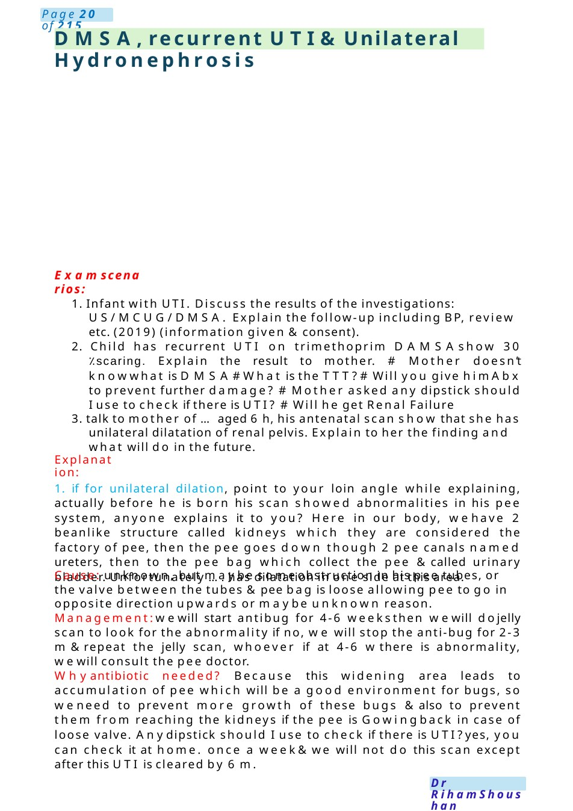
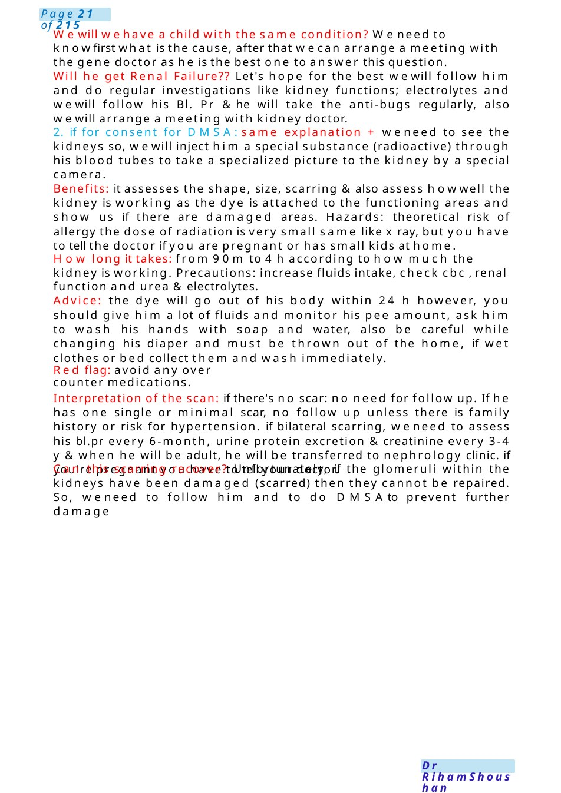

DMSA,recurrent UTI&Unilateral Hydronephrosis
1. Infant with UTI. Discuss the results of the investigations: US/MCUG/DMSA. Explain the follow-up including BP, review etc. (2019) (information given &consent). 2. Child has recurrent UTI on trimethoprim DAMSAshow 30 %scaring. Explain the result to mother. # Mother doesn’t knowwhat is DMSA# What is the TTT?# Will you give him Abx to prevent further damage? # Mother asked any dipstick should I use to check if there is UTI? # Will he get Renal Failure
Scenario Summary
1. Infant with UTI. Discuss the results of the investigations: US/MCUG/DMSA. Explain the follow-up including BP, review etc. (2019) (information given &consent). 2. Child has recurrent UTI on trimethoprim DAMSAshow 30 %scaring. Explain the result to mother. # Mother doesn’t knowwhat is DMSA# What is the TTT?# Will you give him Abx to prevent further damage? # Mother asked any dipstick should I use to check if there is UTI? # Will he get Renal Failure
Full Original Scenario

DMSA,recurrent UTI&Unilateral Hydronephrosis
Examscenarios:
1. Infant with UTI. Discuss the results of the investigations: US/MCUG/DMSA. Explain the follow-up including BP, review etc. (2019) (information given &consent).
2. Child has recurrent UTI on trimethoprim DAMSAshow 30 %scaring. Explain the result to mother. # Mother doesn’t knowwhat is DMSA# What is the TTT?# Will you give him Abx to prevent further damage? # Mother asked any dipstick should I use to check if there is UTI? # Will he get Renal Failure
3. talk to mother of ...aged 6 h, his antenatal scan show that she has unilateral dilatation of renal pelvis. Explain to her the finding and what will do in the future.
Explanation:
1. if for unilateral dilation, point to your loin angle while explaining, actually before he is born his scan showed abnormalities in his pee system, anyone explains it to you? Here in our body, wehave 2 beanlike structure called kidneys which they are considered the factory of pee, then the pee goes down though 2 pee canals named ureters, then to the pee bag which collect the pee &called urinary bladder. Unfortunately ....has dilatation in one side at this area.
Cause: unknown, but maybe someobstruction in his pee tubes, or the valve between the tubes &pee bag is loose allowing pee to go in opposite direction upwards or maybe unknown reason.
Management:wewill start antibug for 4-6 weeksthen wewill dojelly scan to look for the abnormality if no, we will stop the anti-bug for 2-3 m&repeat the jelly scan, whoever if at 4-6 wthere is abnormality, wewill consult the pee doctor.
Whyantibiotic needed? Because this widening area leads to accumulation of pee which will be a good environment for bugs, so weneed to prevent more growth of these bugs &also to prevent them from reaching the kidneys if the pee is Gowingback in case of loose valve. Anydipstick should I use to check if there is UTI?yes, you can check it at home. once a week&we will not do this scan except after this UTI is cleared by 6 m.

Wewill wehave a child with the same condition? Weneed to knowfirst what is the cause, after that wecan arrange a meeting with the gene doctor as he is the best one to answer this question.
Will he get Renal Failure?? Let's hope for the best wewill follow him and do regular investigations like kidney functions; electrolytes and wewill follow his Bl. Pr &he will take the anti-bugs regularly, also wewill arrange a meeting with kidney doctor.
2. if for consent for DMSA:same explanation + weneed to see the kidneys so, wewill inject him a special substance (radioactive) through his blood tubes to take a specialized picture to the kidney by a special camera.
Benefits: it assesses the shape, size, scarring &also assess howwell the kidney is working as the dye is attached to the functioning areas and show us if there are damaged areas. Hazards: theoretical risk of allergy the dose of radiation is very small same like x ray, but you have to tell the doctor if you are pregnant or has small kids at home.
How long it takes: from 90m to 4 h according to how much the kidney is working. Precautions: increase fluids intake, check cbc , renal function and urea &electrolytes.
Advice: the dye will go out of his body within 24 h however, you should give him a lot of fluids and monitor his pee amount, ask him to wash his hands with soap and water, also be careful while changing his diaper and must be thrown out of the home, if wet clothes or bed collect them and wash immediately.
Red flag: avoid any over counter medications.
Interpretation of the scan: if there's no scar: no need for follow up. If he has one single or minimal scar, no follow up unless there is family history or risk for hypertension. if bilateral scarring, weneed to assess his bl.pr every 6-month, urine protein excretion &creatinine every 3-4 y &when he will be adult, he will be transferred to nephrology clinic. if you're pregnant you have to tell your doctor.
Can this scarring recover? Unfortunately, if the glomeruli within the kidneys have been damaged (scarred) then they cannot be repaired. So, weneed to follow him and to do DMSAto prevent further damage
Triplet Pregnancy
Communication Station: Triplet pregnancy – anxious / distressed mother
⚕️ Candidate Opening +empathy
Hello Miss Alia, I’m Dr ...one of the pediatric doctors. I can see howworried and overwhelmed you feel—this is a lot to take in. let’s talk through everything together, and I’ll answer all your questions honestly.
Role Player: Miss Alia (Opening – distressed) Doctor...they told meI’mcarrying triplets...
I’m really scared... are my babies going to die? (Crying, visibly anxious) Please just tell me the truth...are they going to survive?
⚕️ Candidate Acknowledge + honest reassurance: I understand why you’re asking that. The honest answer is that manytriplet babies do survive and do well, especially with modern care. There are somerisks, but we are very experienced in managing themand will do everything possible to give your babies the best outcome.
Mother (crying more): I feel like this is myfault... I shouldn’t have gotten pregnant...
⚕️ Candidate Emotional support (key MRCPCHskill) I’m really sorry you’re feeling this way.
Please know that this is not your fault at all. Triplet pregnancies happen for reasons outside your control. You’ve done the right thing by coming and getting care.
Mother: What exactly is going to happen to them?